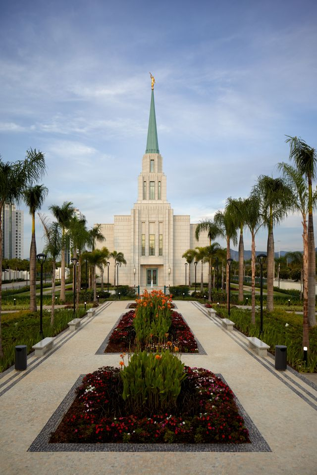
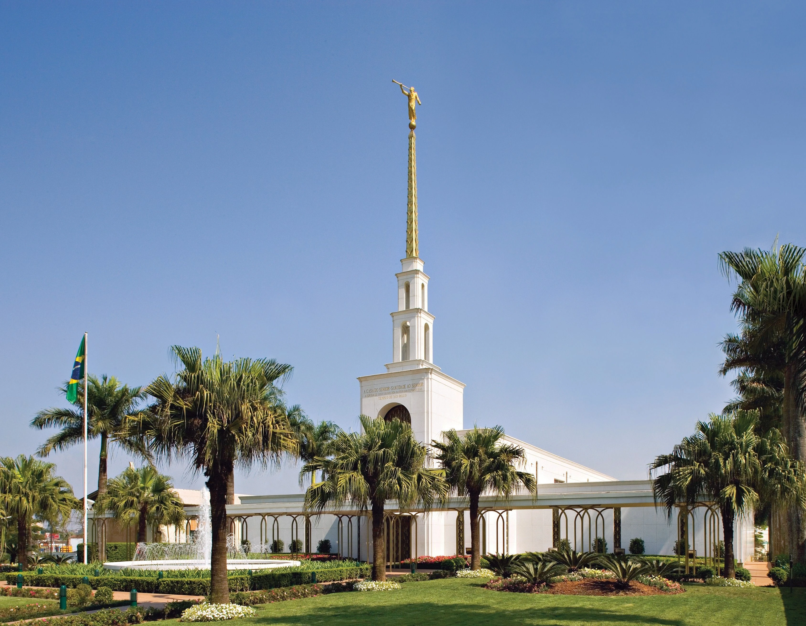
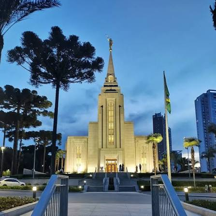
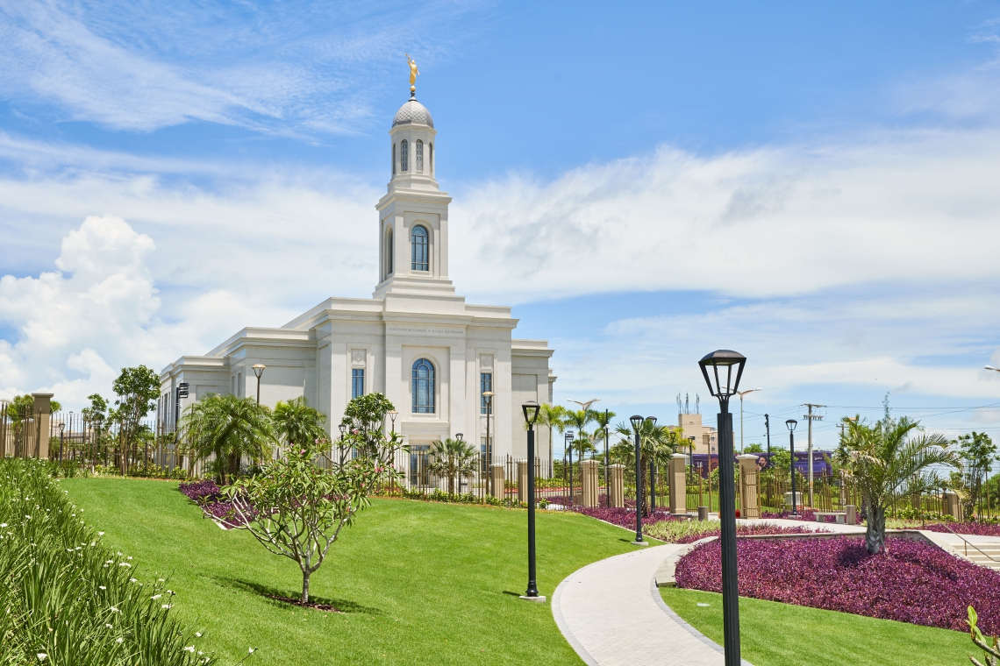
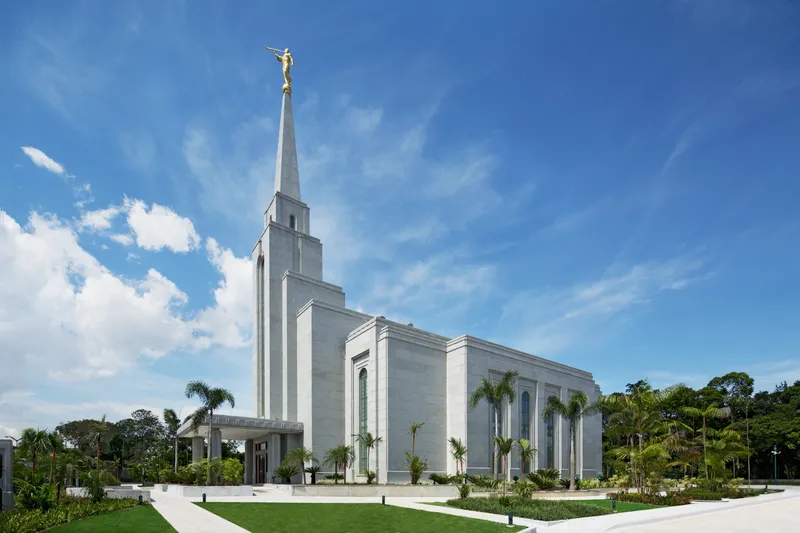
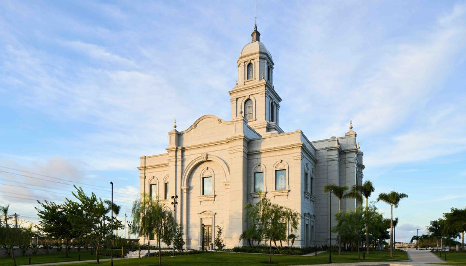

Álbum do Templo
☰
Página Inicial
Antigo
Novo
Grande
Pequeno
Página Inicial
Templo de Campinas

Templo do Rio de Janeiro

Templo de São Paulo
Templo de Belém
Templo de Brasilia

Templo de Curitiba

Templo de Fortaleza

Templo de Manaus

Templo de Salvador